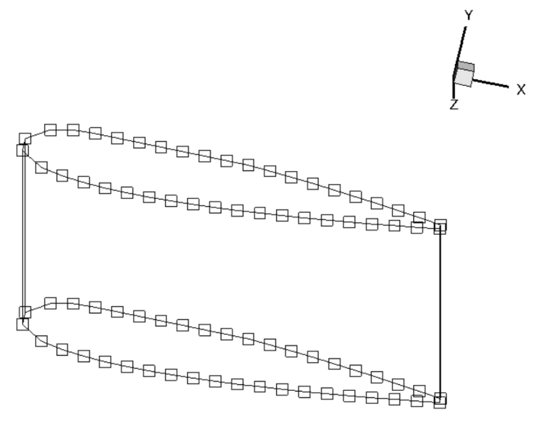
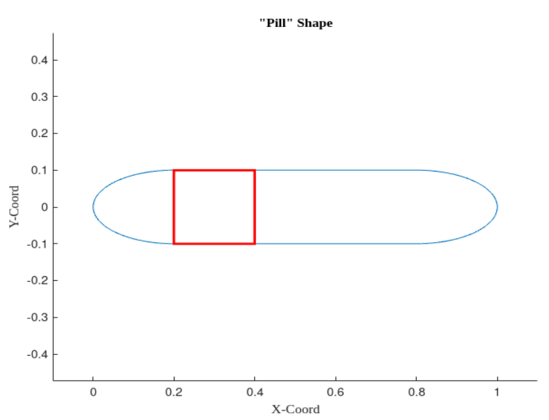
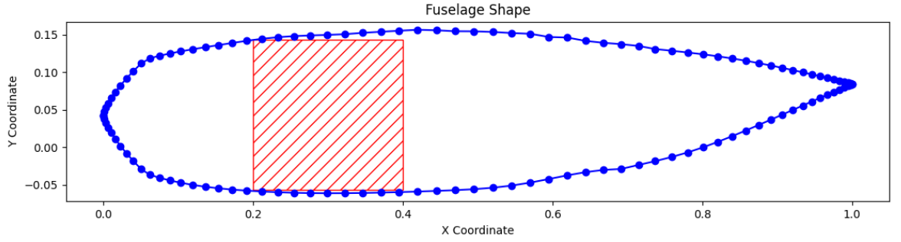
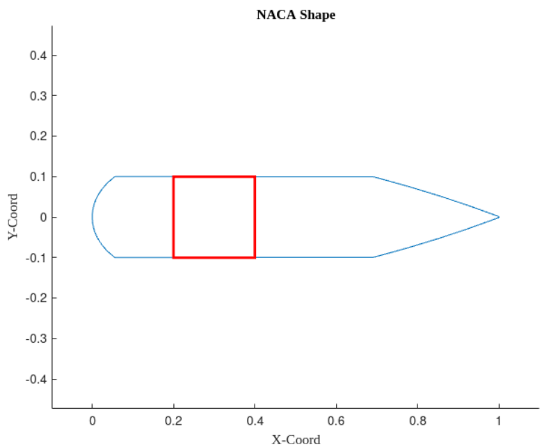
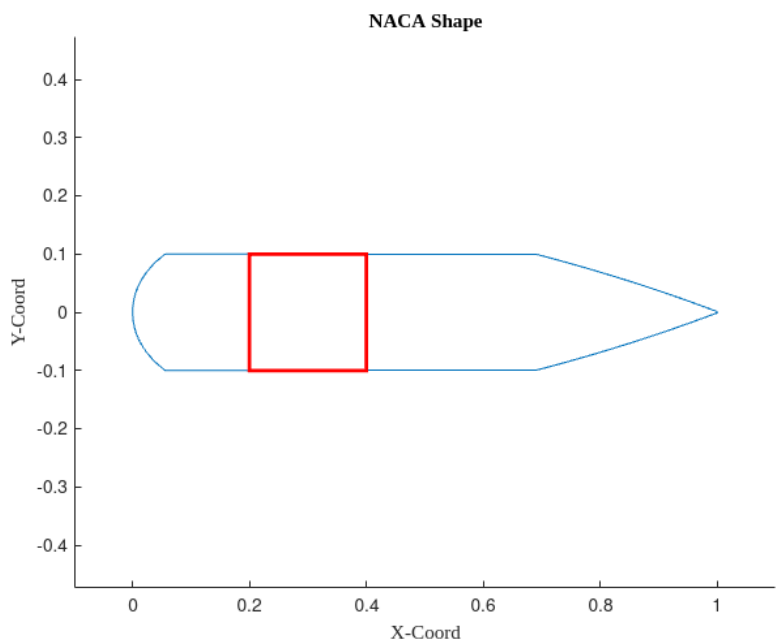

Aerodynamic Shape Optimization

Problem Formulation
A 2-dimensional geometry of an aircraft fuselage is supplied along with a set of constraints which could include: lift, surface area, angle of attack, thickness, volume, flatness and leading-edge or trailing-edge position. The objective is to minimize the drag of the fuselage while varying the shape of the geometry
Minimize \[ C_D = f(x, C_L, alt, AoA, M) \]
with respect to \[ -0.1 \leq x \leq 0.2 \]
Subject to:
- \[ 0.14 \leq C_L \leq 0.2 \]
- \[ SA \leq SA_0 \]
- \[ 0.1t_{i,0} \leq t_i \leq 3t_{i,0} \]
- \[ pt_{j,0} \leq t_j \leq 3t_{j,0} \]
Nomenclature
| Symbol | Name |
|---|---|
| x | Shape Variable |
| alt | Altitude |
| SA | Surface Area |
| V | Volume |
| AoA | Angle of Attack |
| \(t_i\) | Thickness of Fuselage without Payload |
| \(t_j\) | Thickness of Fuselage with Payload |
| p | Height of the Payload (scaled) |
MACH-Aero Framework
There are six major modules used in MACH-Aero: Pre-processing, geometry parameterization, volume mesh deformation, flow simulation, adjoint computation and optimization.

- Utilize mesh generation tools like pyHyp or ICEM to create a volume mesh for the baseline geometry.
- Generate Free-Form Deformation (FFD) points that will be used for morphing the design surface.
- Provide a set of baseline design variables to the optimizer.
- Use IPOPT with the SQP algorithm for optimization, facilitated by pyOptSparse.
- Receive updated design variables from the optimizer.
- Use FFD points and perform deformation on the design surface.
- Output the deformed design surface to the mesh deformation module (IDWarp).
- Compute values of geometric constraints and their derivatives with respect to design variables.
- Deform the volume mesh based on the updated design surface from pyGeo.
- Output the updated volume mesh for the next step.
- Receive the updated volume mesh.
- Utilize high-fidelity CFD tools (e.g., ADflow or DAFoam) to compute state variables or physical fields (pressure, density, velocity, etc.).
- Compute objective and constraint functions (e.g., drag and lift).
- Compute total derivatives of objective and constraint functions with respect to design variables.
- Provide derivatives back to the optimizer.
- Use adjoint solvers such as ADflow or DAFoam.
- Receive values and derivatives of objective and constraint functions from the adjoint computation module.
- Perform SQP computation.
- Output a set of updated design variables to pyGeo for the next iteration.
CFD Solver and Optmizer
The following packages are used ADFlow, IPOPT, pyOptSparse, pyGeo, pyHyp, IDWarp and GMRES solver from PETSc.
ADFlow
The Mach-Aero framework provides support for ADflow and DAfoam. ADflow was chosen as it is a robust solver and has a discrete adjoint method that efficiently computes the derivatives of objective and constraint functions with respect to large numbers of design variables. It has been coupled with an approximate Newton-Krylov (AKN) and Newton-Krylov (NK) solver for efficient and accurate convergence. There are two main steps when using this method. In the first step, we use the ANK solver to significantly decrease the total residual norm by five orders of magnitude compared to the initial iteration, which starts with free-stream conditions. Once this initial reduction is achieved, we switch to the NK solver for the final step of convergence
Derivative Computation
As the aerodynamic shape optimization has a considerably large number of design variables, the choice of derivative computation should not scale with respect to the number of design variables. Thus, the adjoint method is used to compute the total derivatives as it is independent of the number of variables. Adjoints are computed through ADflow using a discrete adjoint method, then the preconditioned GMRES solver from PETSc is used for solving the adjoint equations.
IPOPT
The optimization algorithm used is called IPOPT which works great for large-scale nonlinear optimization. The optimizer makes use of an interior point line search filter and adaptive barrier update strategies. This algorithm has a vast array of settings that can be modified, the most important ones are highlighted in the listening below:
optOptions = {
"max_iter": 10000,
"tol": 1.0e-6,
"limited_memory_max_history": 1000,
"hessian_approximation": "limited-memory",
"start_with_resto": "yes",
"output_file": os.path.join(args.output, "IPOPT_print.out"),
}
The limited-memory setting of the Hessian approximation is used to reset this sparse matrix at times which greatly speeds up the computation time. The tolerance is set to 1.0e-6 which is set to terminate when the scaled Non-Linear Program (NLP) error becomes smaller than that value. The objective function of this problem is scaled to a factor of 1.0e4 which is again done to make it more “well-behaved.
DVGeo Constraints
pyGeo is a package for generating and manipulating geometry, particularly for applications involving shape optimization. DVGeometry (short for “Design Variable Geometry”) parameterizes and modifies geometry (pointsets) in shape optimization problems, using the free-form deformation (FFD) method
Thickness Constraint
Thickness constraints create a matrix of points along chord and span-wise direction, where the thickness is computed, the user can set a lower and upper bound on individual points. By default, thickness constraints act as scaled constraints where the initial value will be represented as 1. However, if scaled=False, then the user can provide physical length as an upper and lower bound.

For a 2D fuselage, the payload location is fixed in the aircraft, thus through thickness constraint We can represent the geometry of the payload in the fuselage by increasing the lower limit of thickness to the size of the fuselage, so it encapsulates the payload. The figure above represents the bounds the fuselage can move:
npl =100 #points along chord wise diretion
plthick = np.ones((2,100))*0.1
plthick[:,19:40] = 2.7027027 #minimum height where payload is
puthick = np.ones((2,100))*4
DVCon.addThicknessConstraints2D(leList, teList, 2, npl, lower=plthick, upper=puthick, scaled=True)
Surface Area (Mass) Constraint
The fuselage is represented as a 2-Dimensional shape and hence a method of quantifying the mass of the optimized shape is necessary. One way of doing this is to use the surface area as a constraint and with regards to the geometry it is the circumference of the shape as the depth is unity in z-direction. Using data from MatWEB, a material science property data sheet, carbon fiber infused with epoxy resin has a density of about 1500 kg/m³ and assuming a typical layer thickness of 1mm means that a square meter of carbon fiber laminate equates to about 1.5kg. Hence one is able to initialize the circumference of the starting shape to a known value, for example 2 meters and by virtue of the 2D simulation would also equate to a surface area of 2 meters squared; also known as 3kg. Therefore in the setup of the optimization problem, a upper and lower bound can be specified; see the Listing below:
# Only ADflow has the getTriangulatedSurface Function
# Obtain the surface area from ADFlow
DVCon.setSurface(CFDSolver.getTriangulatedMeshSurface())
# constrain the max and minmum weight or surface area
DVCon.addSurfaceAreaConstraint(lower = 0.3, upper = 1.5)
Linear Constraint
The FFD box representing the control points has to be 3-D shape, however our fuselage is represented in 2-D. Thus, to overcome it we mirror the shape on the other side with a chord length of 1. Note, as this becomes a 3-D problem the control point will double, but there are no control points in between the two edges as shown in Figure
To make sure the shape of the fuselage remains the same, linear constraints are introduced to ensure that the shape deformations on one side of the airfoil mirror that of the other. The global index of the control point on one side is the input parameter as a vector and the other side as the other input. Then factorA is set to 1 and factorB is set to -1, so it mirrors the exact deviation of the control point on both sides
\[ factorA.dvA - factorB.dvB = 0 \]
lIndex = DVGeo.getLocalIndex(0) #obtain the global index of control point
indSetA = []
indSetB = []
for i in range(lIndex.shape[0]):
indSetA.append(lIndex[i, 0, 0])
indSetB.append(lIndex[i, 0, 1])
for i in range(lIndex.shape[0]):
indSetA.append(lIndex[i, 1, 0])
indSetB.append(lIndex[i, 1, 1])
DVCon.addLinearConstraintsShape(indSetA, indSetB, factorA=1.0, factorB=-1.0, lower=0, upper=0)
Optmized Shape
The optimization framework is applied to the 'pill' shape initially, featuring a square payload with a size of 0.2. The payload is positioned along the x-axis in the range [0.2, 0.4], and it is symmetric to the x-axis.
The Free-Form Deformation (FFD) grid is composed of 10 points for each edge, totaling 40 control points. The specified bounds are as follows:
- Deviation of control point - [-0.1, 0.2]
- Coefficient of Lift - [0.1, 0.2]
- Surface Area - [0.3, 1] (all the shape is initialized to have the maximum surface area or weight)
- Thickness Constraint - t(19, 40) = [0.2, 0.4] (there were 100 points in the chord direction)
The following the convergence history of optimization (note: gray lines are Cl bounds):

The following are the converged shape of the fuselage after 123 iterations:

The shape is in line with what was expected, the nose is round which becomes clear looking at the zoomed-in view in Figure above. The payload is sufficiently embedded inside the shape and the trailing edge contracts to a point that suggests that the drag has been minimized. There is also a prescribed lift coefficient which is always desirable for a fuselage and in this instance, it has achieved a good balance between the two considering the thickness of the shape. We expected the tail end to be much higher and the nose section to get wider later on. However, this might have happened due to surface constraint as it is exactly 1 at the end of convergence which was the limit.

Ideally it is better to have a slender fuselage with a large length, however, due to payload constraint and length constraints, the optimized aircraft is stout. In the real world, C-17 has similar requirements of a shorter length but is still able to carry a large payload. As shown in Figure above, the fuselage is quite similar to C-17's fuselage. As mentioned earlier the tail section being lower could be because of surface constraint. Hence, it can be assumed that the optimizer worked as intended.
Investigation of Optimum
The optmizer was run with three different intial strating point as mention earlier. Following the starting geometry ellipse and NACA shape:
 

The converged values of \(C_L \) and \(C_D \) for different shapes:
| Initial Geometry | Pill | Ellipse | NACA |
|---|---|---|---|
| \(C_L \) | 0.140005 | 0.140009 | 0.140006 |
| \(C_D \) | 0.0399129 | 0.0399131 | 0.0399132 |
We Visualizing all three converged fuselage shapes in the same plot and ensure that they are in correlation with each other. Looking at the figure below for this comparison, what is interesting is that it appears as if the leading edge has shifted slightly between the converged optima, however, so has the trailing edge. This was not expected but it is reassuring to see that the overall shape appears to be identical in conjunction with the values in Table above

Future Work
Implement the same framework for 3-D geometry.
Check out the project on GitHub: GitHub Repository
View the live preview: Live Preview